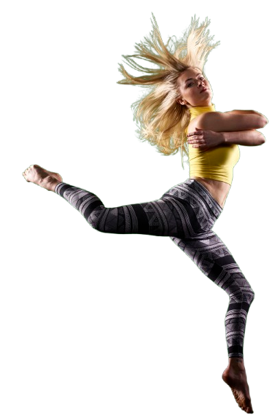
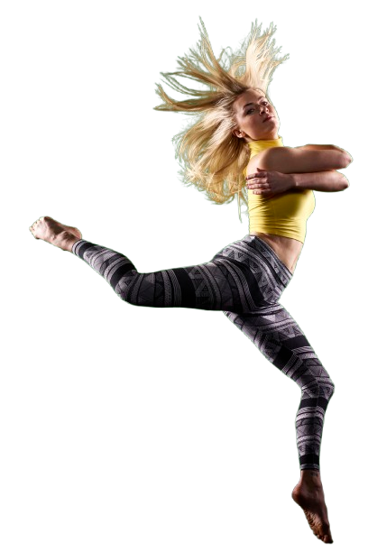

🎙️ Spot Publicitário – MozPest
Produzi um spot publicitário de até 30 segundos para promover a empresa MozPest em Moçambique. Desenvolvi um roteiro claro e impactante, realizei a locução com entonação adequada e editei o áudio com efeitos, cortes precisos e compressão para qualidade profissional.


 
